Tap / 点按
在音符抵达判定线的瞬间接住它。

在 EKG//SYNC 里，你控制的是一块沿着垂直空间移动的判定板。每一次点击、长按、滑动与躲避，都发生在音乐真正的脉冲里。
非商业性质这是一个出于兴趣制作的独立音游项目，不以商业盈利为目的。本页用于介绍项目与分享开发进展。
从点按、长按到滑动和闪避，每一种音符都在改变你与判定线之间的关系。
在音符抵达判定线的瞬间接住它。
不要松开，让一段声音完整穿过你的手。
沿着变化的路径移动，保持流动。
沿着方向挥动，把音符一刀切开。
有些东西不能接。错开，活下来。
游戏内截图暂时不在这里展示。等 EKG//SYNC 继续稳定下来，再把它的世界完整打开。
THE PROJECT IS STILL MOVING
EKG//SYNC 仍在制作中。
先通过实机视频，看看它如何运行。